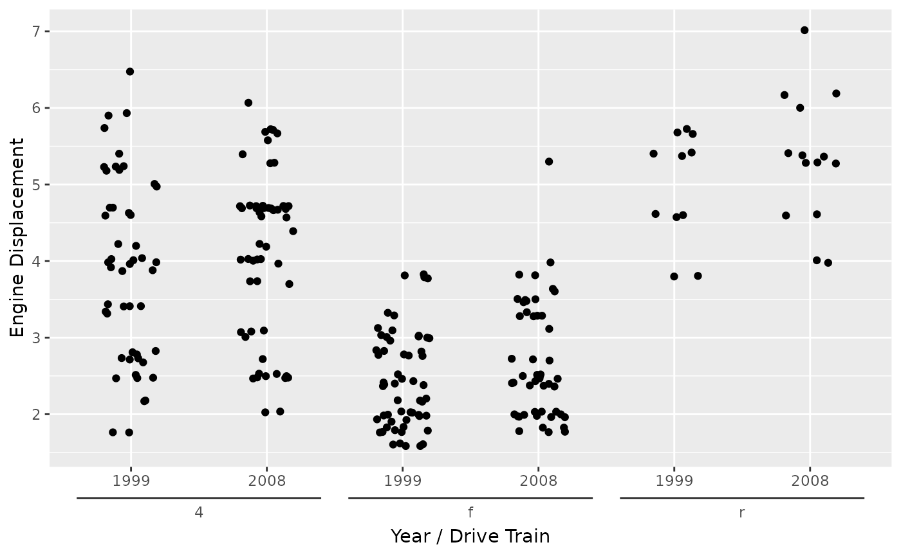
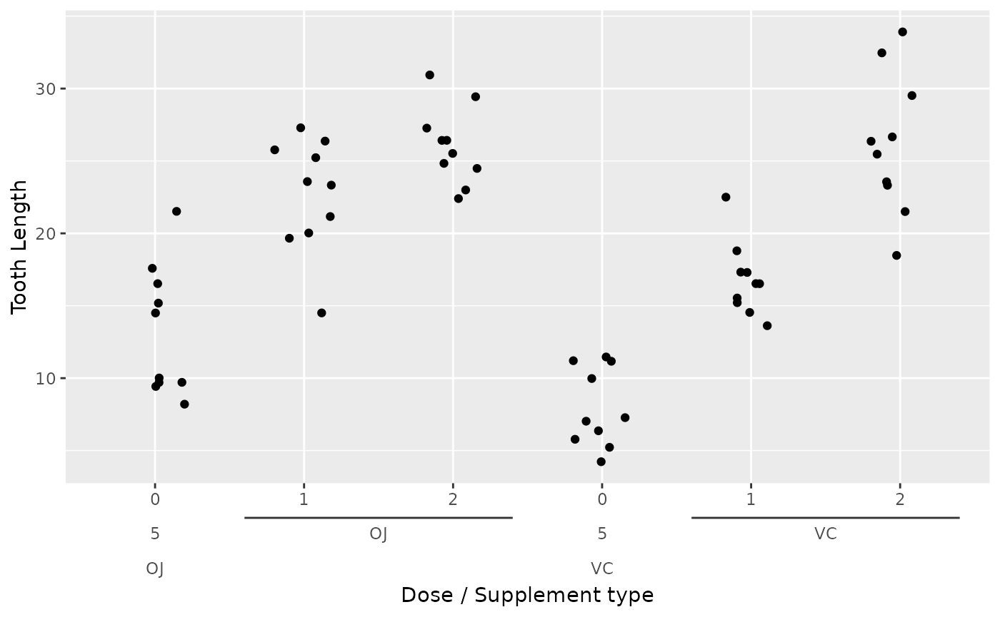
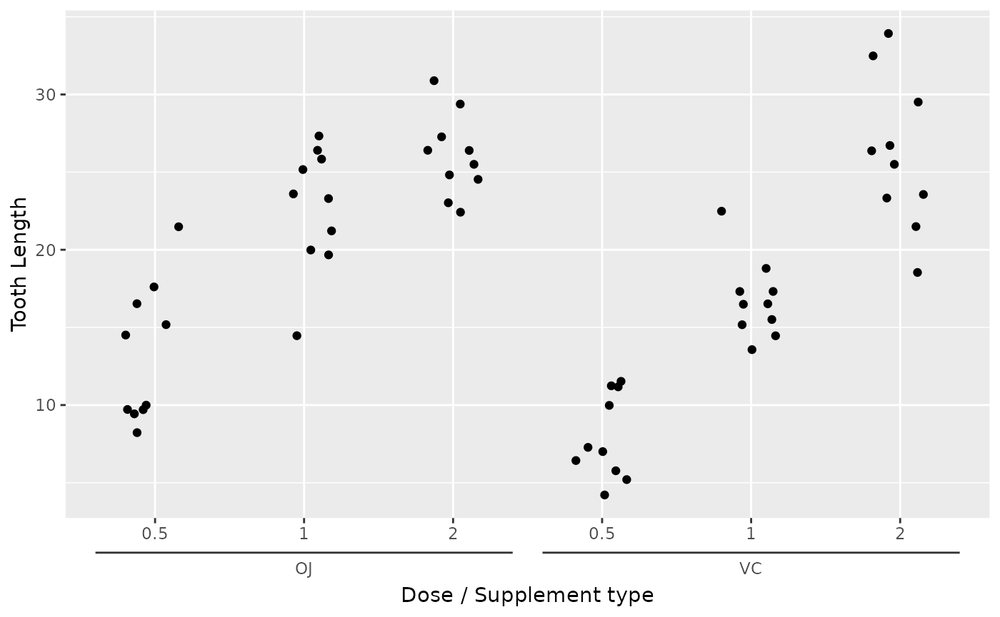
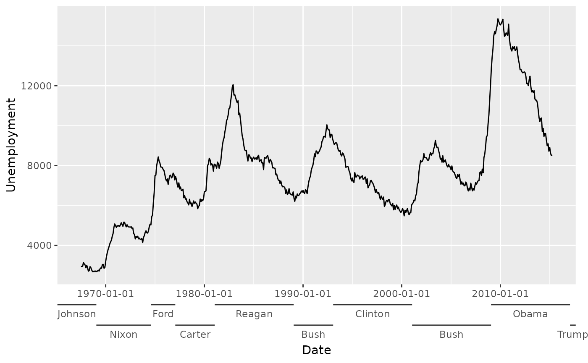
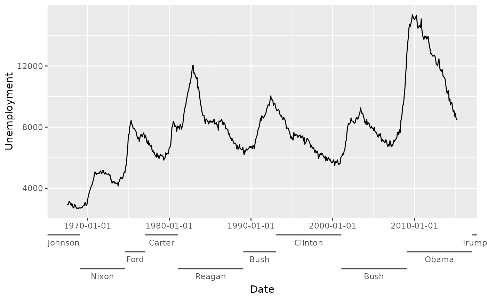
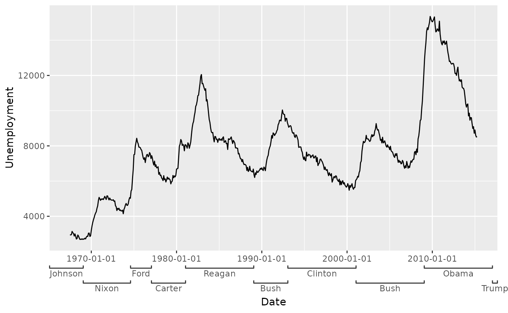
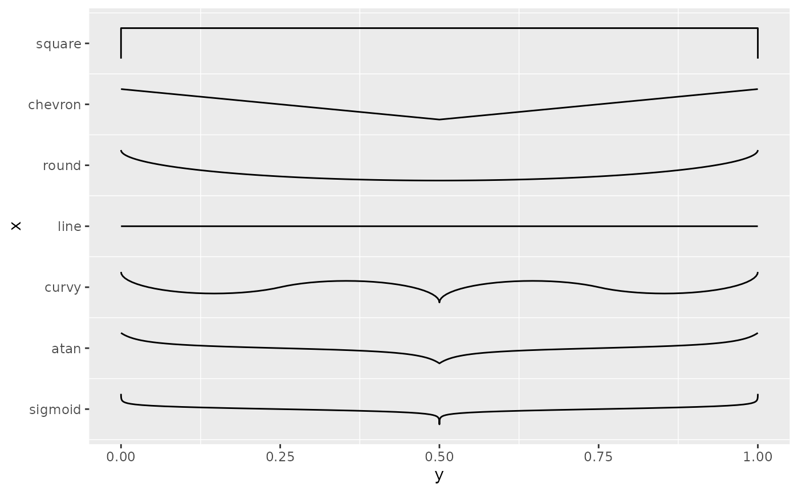
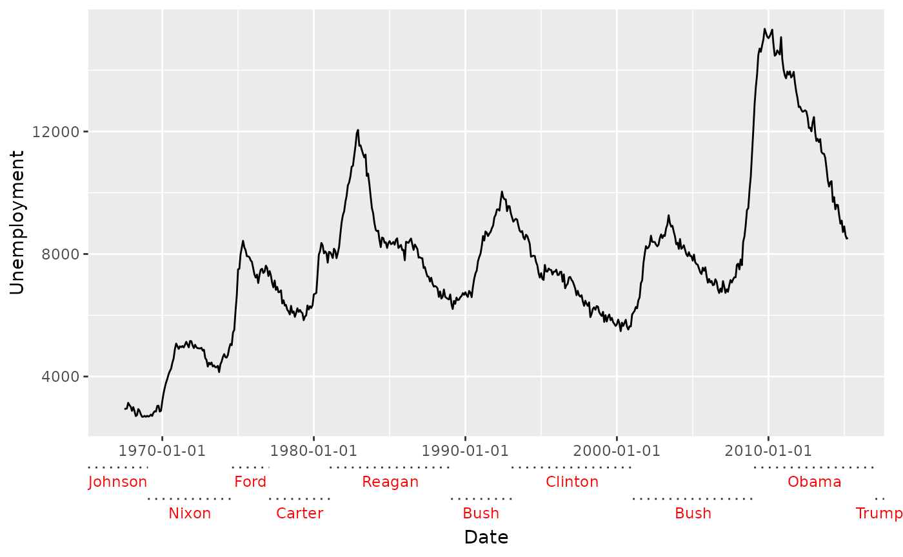
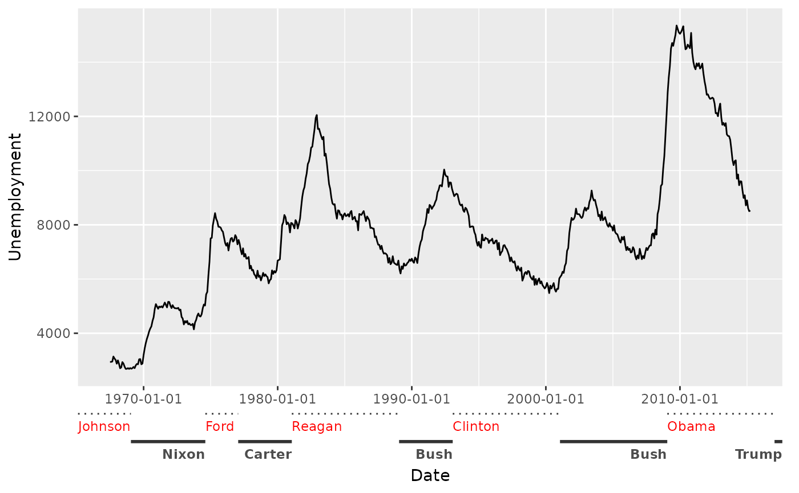

Axes
axes.Rmd
library(gguidance)
#> Loading required package: ggplot2
example <- ggplot(mpg, aes(displ, hwy)) +
geom_point() +
labs(
x = "Engine displacement",
y = "Highway miles per gallon"
) +
theme(axis.line = element_line())Warning This vignette is a work in progress and is incomplete.
A primer on position guides
An axis guide can be specified at two places: in the scale, or in the
guides() function. You can use a string naming the type of
guide by omitting the "guide_" prefix from the function,
i.e. "axis". If you want to customise the axis, you can use
the function itself.
Below is example code for setting the axis in the scale.
example +
scale_x_continuous(guide = "axis") +
scale_y_continuous(guide = guide_axis(angle = 45))If you don’t need to set any scale parameters, it is shorter to use
the guides() function.
example +
guides(x = "axis", y = guide_axis(angle = 45))Setting secondary axes works much the same way. The
sec_axis() and dup_axis() function have a
guide argument that can be used. When you use the
guides() function, you can set the x.sec or
y.sec guides.
example +
scale_x_continuous(sec.axis = dup_axis(guide = guide_axis(angle = 45))) +
guides(y.sec = "axis")The axis extensions in {gguidance} are specified identically to
vanilla {ggplot2}. The naming pattern of the functions is generally
guide_axis_{type}(). Therefore, to use these axes as a
string, you can use "axis_{type}".
Nested axes
The guide_axis_nested() function constructs axis guides
that can indicate ranges of values. There are two ways to use these: (1)
the ranges can be inferred from the labels or (2) you can manually set
the ranges of interest.
Ranges from labels
The default behaviour of guide_axis_nested() is to infer
ranges from the axis labels. These are inferred by trying to split the
labels based on a separator. The interaction() function is
convenient here, because it sorts the levels by the outer variable and
automatically inserts "." as a separator, which works well
with the behaviour of guide_axis_nested().
ggplot(mpg, aes(y = displ, x = interaction(year, drv))) +
geom_jitter(width = 0.2) +
labs(
x = "Year / Drive Train",
y = "Engine Displacement"
) +
guides(x = "axis_nested")
However, beware that the default separator is any non-alphanumeric
series of characters. This can give problems when any of the labels
already contain such a character. In the example below,
interaction() is inserting a "." as separator,
but also the decimal notation from the dose variable
contains a ".".
ggplot(ToothGrowth, aes(interaction(dose, supp), y = len)) +
geom_jitter(width = 0.2) +
labs(
y = "Tooth Length",
x = "Dose / Supplement type"
) +
guides(x = "axis_nested")
#> Warning: Not all labels in `guide_axis_nested()` can be split into equal lengths.
#> ℹ Is "[^[:alnum:]]+" the correct `sep` argument?
The way to solve this issue is to change the
interaction() separator from the decimal notation, and
instruct the axis to use that separator.
ggplot(ToothGrowth, aes(interaction(dose, supp, sep = ";"), y = len)) +
geom_jitter(width = 0.2) +
labs(
y = "Tooth Length",
x = "Dose / Supplement type"
) +
guides(x = guide_axis_nested(sep = ";"))
Manual ranges
The alternative to inferring the ranges from the labels, is to
manually set the ranges. You can use this as general annotation. Every
range is parametrised by a range_start and
range_end location. Optionally, you can specify
range_name to make the labels. Below, we’re using the
presidential dataset to provide annotations for the
economics dataset.
econ <- ggplot(economics, aes(date, unemploy)) +
geom_line() +
labs(x = "Date", y = "Unemployment") +
# To prevent the last label from being cut off
theme(plot.margin = margin(5.5, 11, 5.5, 5.5))
econ +
guides(x = guide_axis_nested(
range_start = presidential$start,
range_end = presidential$end,
range_name = presidential$name
))
Alternatively, you can use the range_data and
range_mapping arguments in a similar way you would with
layers.
econ +
guides(x = guide_axis_nested(
range_data = presidential,
range_mapping = aes(start = start, end = end, name = name)
))You can see in the example above that the ranges are dodged. This
automatically occurs when ranges overlap with one another. To override
the dodging of ranges, one can set the level variable in
the range_mapping, or use range_level
directly.
econ +
guides(x = guide_axis_nested(
range_data = presidential,
range_mapping = aes(
start = start, end = end, name = name,
level = rep(3:1, length.out = nrow(presidential))
)
))
Styling
Brackets
The plain line is not the only available option for displaying the
ranges. There is a selection of brackets to choose from, and one of them
is the "square" bracket. The width or height that a bracket
occupies, can be set with the bracket_size argument.
econ +
guides(x = guide_axis_nested(
range_data = presidential,
range_mapping = aes(start = start, end = end, name = name),
bracket = "square",
bracket_size = unit(1, "mm")
))
These brackets can be specified in three ways: (1) they can be
constructed by a bracket function, (2) they can be a string naming the
function without the bracket_-prefix or (3) you can give a
2-column matrix as line coordinates. In option (2), some functions take
parameters that influence for example the curvature of the brackets, so
again, you can use the function instead of the string if you need to
tweak. Below, the brackets that come with {gguidance} are displayed.
# Listing all the bracket names and their functions
bracket_list <- list(
"sigmoid" = bracket_sigmoid(),
"atan" = bracket_atan(),
"curvy" = bracket_curvy(),
"line" = bracket_line(),
"round" = bracket_round(),
"chevron" = bracket_chevron(),
"square" = bracket_square()
)
# Reshaping data
type <- rep.int(names(bracket_list), lengths(bracket_list) / 2)
brackets <- as.data.frame(do.call(rbind, bracket_list))
brackets <- transform(
brackets,
type = type,
x = (x / 2) + match(type, names(bracket_list)) - 0.25
)
# Plotting brackets
ggplot(brackets, aes(y, x, group = type)) +
geom_line() +
scale_y_continuous(
breaks = seq_along(bracket_list),
labels = names(bracket_list)
) +
theme(panel.grid.major = element_blank())
For option (3), the example below shows how you can describe your own bracket with a 2-column matrix. Note that for horizontal axes, the 1st column is the y-direction and the 2nd column is the x-direction. For vertical axes, this is flipped.
Theming
The styling of the brackets inherit from the relevant
axis.ticks.{x/y}.{position} theme element. The styling of
the text inherit from the relevant
axis.text.{x/y}.{position} theme element. To style these
elements separately from their parent, you can use the
bracket_theme and deep_text arguments.
econ +
guides(x = guide_axis_nested(
range_data = presidential,
range_mapping = aes(start = start, end = end, name = name),
deep_text = element_text(colour = "red"),
bracket_theme = element_line(linetype = "dotted")
))
Moreover, you can provide a list of elements to
deep_text or bracket_theme to style these
elements on a per-level basis for even greater control. Worth
mentioning: the hjust parameter of this text is relative to
the range it occupies.
econ +
guides(x = guide_axis_nested(
range_data = presidential,
range_mapping = aes(start = start, end = end, name = name),
deep_text = list(element_text(colour = "red", hjust = 0), # 1st level
element_text(face = "bold", hjust = 1)), # 2nd level
bracket_theme = list(element_line(linetype = "dotted"), # 1st level
element_line(linewidth = 1)) # 2nd level
))